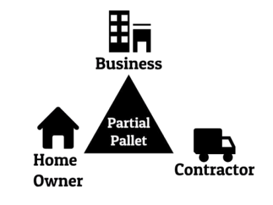

Working as a contractor for 10+ years, I realize the value of time, money and resources. An idea came to mind one day after meeting with a customer who wanted to extend a 10-year old brick sidewalk.
Once I set out to try to match the material, I found it to be a frustrating and time consuming process. After searching many days, I eventually located the material in the far corners of a stockyard. There had to be a better way.
We created this online marketplace to help businesses, contractors and homeowners alike buy and sell leftover or discontinued inventory that would otherwise go to waste.
